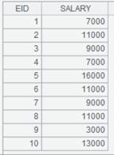

Description:
The external library function creates indicator variables for the MVP analysis and automatically perform the subsequent handling according to a sequence of indicator variables for missing values.
Syntax:
|
A.mvp(T) |
During modeling, create indicator variables for MVP analysis and automatically perform the subsequent handling according to sequence A of multiple missing value indicator variables, and return a binary sequence consisting of two bits – the first bit represents a table sequence made up of MVP columns and the second one is sequence Rec of creation and handling records |
|
A.mvp@r(Rec) |
During scoring, create a table sequence consisting of MVP columns according to sequence A of multiple missing value indicator variables and sequence Rec of creation and handling records |
Parameters:
|
A |
A sequence |
|
T |
A sequence of target variable values |
|
Rec |
A sequence of creation and handling records |
Options:
|
@bnie |
Each option specifies a target type, and options are mutual-exclusive; automatically judge the type when no option is used; the order of priorities of the options is binary, numeric, integer and enumerated |
Return value:
A sequence
Example:
|
|
A |
|
|
1 |
=T("D://house_prices_train.csv") |
Import modeling data |
|
2 |
=T("D://house_prices_test.csv") |
Import scoring data |
|
3 |
=A1.mi("LotFrontage").field(1) |
Return a sequence of indicator variables for missing values in ¡°LotFrontage¡± |
|
4 |
=A1.mi("Alley").field(1) |
Return a sequence of indicator variables for missing values inf ¡°Alley¡± |
|
5 |
=A1.(SalePrice) |
A sequence of target variable values |
|
6 |
=[A3,A4].mvp(A5) |
 A6(1): A table sequence containing MVP columns A6(2):A sequence of creation and handling records Rec |
|
7 |
=A2.mi("LotFrontage").field(1) |
|
|
8 |
=A2.mi("Alley").field(1) |
|
|
9 |
=[A7,A8].mvp@r(A6(2)) |
Return a table sequence made up of indicator variables of MVP columns for the scoring |